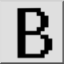
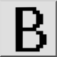
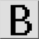
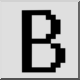

Exportera bitmap...
Verktygsfält / ikon:
 

Meny: Fil > Exportera bitmap...
Genväg: X, B
Kommandon: bitmapexport
Detta är en automatisk översättning.
Verktygsfält / ikon:
 

Meny: Fil > Exportera bitmap...
Genväg: X, B
Kommandon: bitmapexport
Det här verktyget exporterar den aktuella ritningen som en bitmappfil.
En dialogruta för att välja utdatafil visas. När filnamnet har angetts
frågar en andra dialogruta efter bitmappstorlek och önskad bakgrundsfärg.
Observera att export till bitmappar med mycket stor storlek kan ta lång
tid, beroende på din maskinvara. Den maximala storleken för bitmaps är bredd x
höjd ≤ 2 147 483 647.